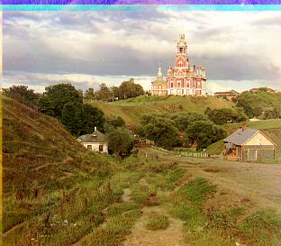
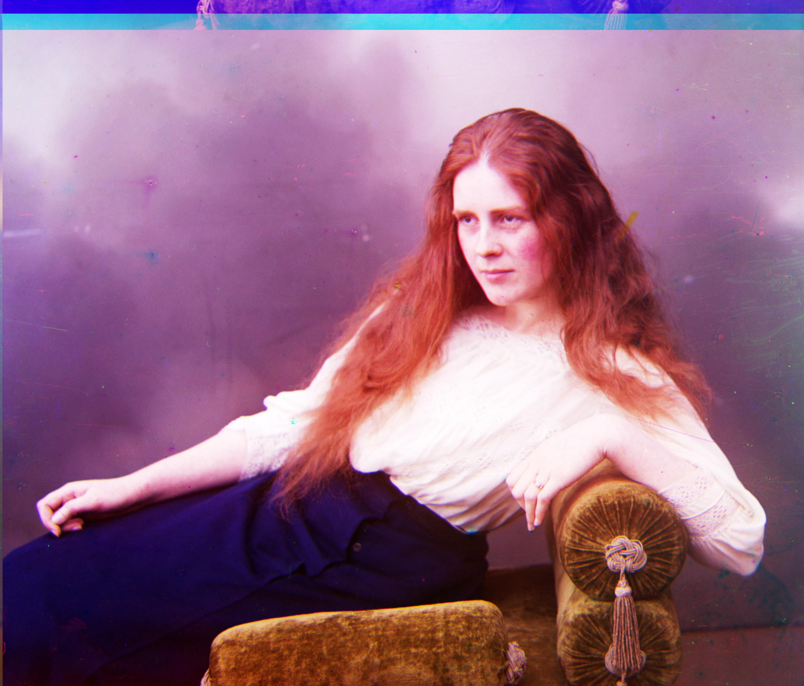
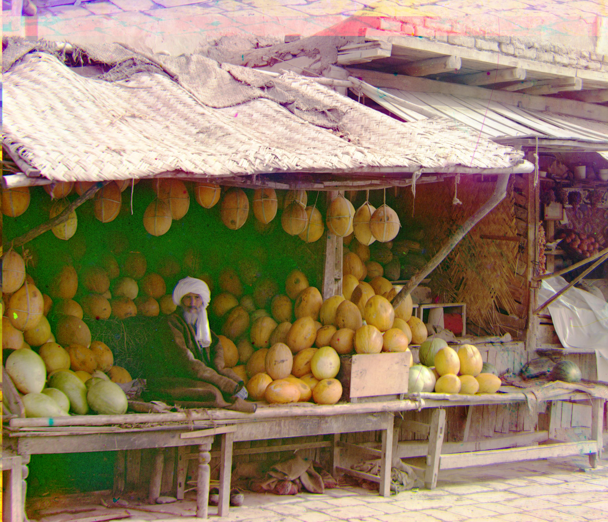
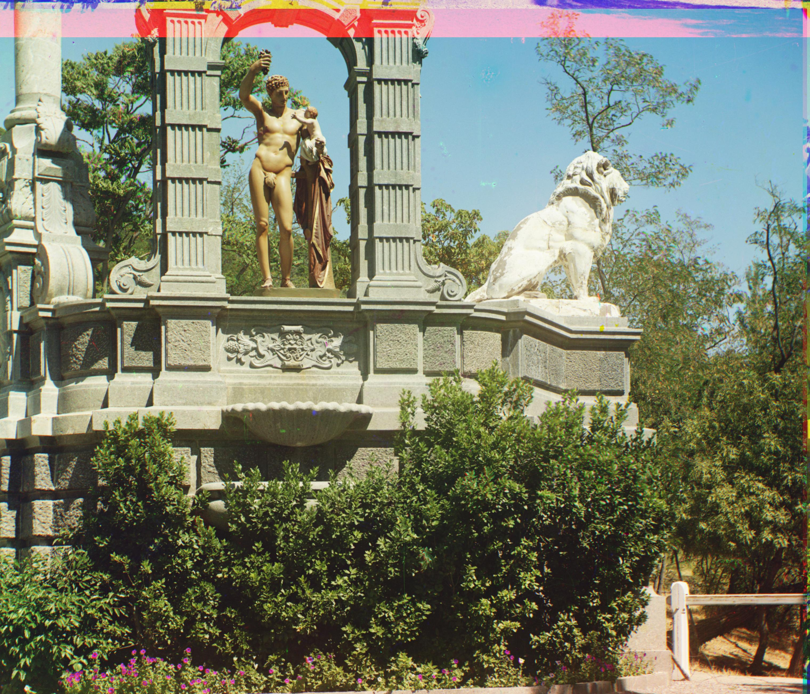
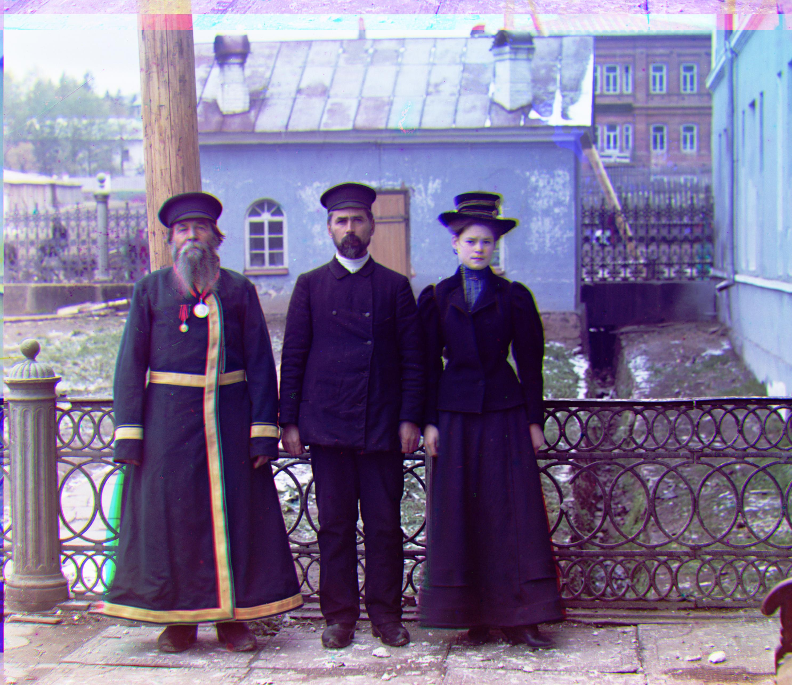

Here're the results. On the left side it's the baselines using pyramid. On the rigthand side are the results after applying histogram equalization.
Approach: for the baseline, I used image pyramid with Euclidean Distance. I tried both using Euclidean Distance and NCC for calculating the best displacemnent for each layer, however, I realized later that the image accuracy is not as good when using NCC, which is why I chose Euclidean Distance in the end.
The search space for each layer is fixed: [-15, 15]. And I applied the best displacemnent I found from the courser layers as the starting point for the new search at finer layers.
I initially ran into a problem where the image displacemnent can be calculated, but the images for different channels don't quite align up with each other. Later I found out that it was a bug where I accidentally applied the shift for red channel to the green channel.
Also, initially the images didn't quite line up and there were thick black boarders around the image. This was resolved by cropping each image channel by 10% on each side to remove border so that the score on the border won't be 0 and therefore won't be taken into consideration.
Bells & Whistles: I applied histogram equalization, which performs global contrast enhancement by computing a histogram across all channels and making it so all intensities are as equally common as possible. All the images are aligned nicely and have all the colors for baseline and histogram equalization, except for emir.jpg. As we can see from the picture, the red channel is not aligned well enough. I suspected that the number of layers is too big such that it got confused at the beginning. Therefore, I decreased the layer number from the ogininal 6 to 3 and 4 for testing purposes. As we can see from the resulting image, there's no more significant color misalignments.
Cathedral


Church
Emir
Emir processed with 3 (left) and 4 (right) pyramid layers
Harvesters
Icon
Lady


Melons


Monastery
Onion_church
Sculpture


Self_portrait
Three_generations


Tobolsk
Train